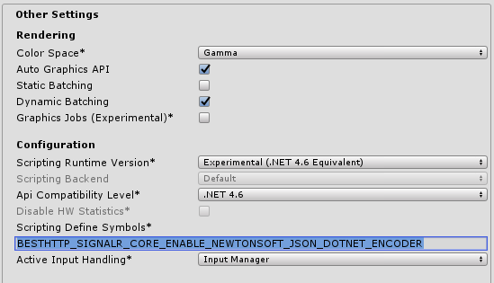

Encoders
SignalR Core can use different encodings to send and receive messages. Current encodings are JSon and MessagePack. Using these are not automatic, as most of these implementations require 3rd plugins and/or changes to the server.
Advice:
If possible use MessagePack as it's more efficient memory and cpu wise too!
JSon
For the plugin, the JSon encoder is available without any additional steps. The JsonProtocol class is a generic implementation that can work with different encoders that can use concreate JSON parsers. The one that comes with the plugin is the LitJsonEncoder.
hub = new HubConnection(new Uri("https://server/hub"), new JsonProtocol(new LitJsonEncoder()));
How to Enable and Use Newtonsoft's JSON .NET For Unity Encoder
There's an encoder implementation that uses the Newtonsoft's JSON .NET For Unity package.
Steps to enable it and use it:
- Download and import the Newtonsoft's JSON .NET For Unity package
-
Add the BESTHTTP_SIGNALR_CORE_ENABLE_NEWTONSOFT_JSON_DOTNET_ENCODER define to the Scripting Define Symbols input under PlayerSettings/Other Settings:

-
Use the now-available
JsonDotNetEncoderclass:
hub = new HubConnection(new Uri("https://server/hub"), new JsonProtocol(new JsonDotNetEncoder()));
The JsonDotNetEncoder and the LitJsonEncoder classes can be found in the Best HTTP\Examples\SignalRCore\Encoders\ folder.
MessagePack
By default the server has support for the JSon encoding but by adding new packages and a few lines of code the MessagePack encoding can be enabled too.
There's a MessagePack encoding implementation for the plugin, but it's disabled by default. To enable and use it, follow these steps:
- Download and import the Json & MessagePack Serialization package
- Create a new Asembly Definition file under the Plugins\GameDevWare.Serialization folder
- Locate the BestHTTP.asmdef file under the Best HTTP folder
-
Reference the newly create asmdef file and press Apply:
-
Add the BESTHTTP_SIGNALR_CORE_ENABLE_GAMEDEVWARE_MESSAGEPACK define to the Scripting Define Symbols input under PlayerSettings/Other Settings:

-
Use the now available
MessagePackProtocolclass:
hub = new HubConnection(new Uri("https://server/hub"), new MessagePackProtocol());
As you can see, the MessagePackProtocol uses only one class there's no MessagePackEncoder as it's very specific and uses directly the Json & MessagePack Serialization classes.
The MessagePackProtocol class can be found in the Best HTTP\Examples\SignalRCore\Encoders\ folder.